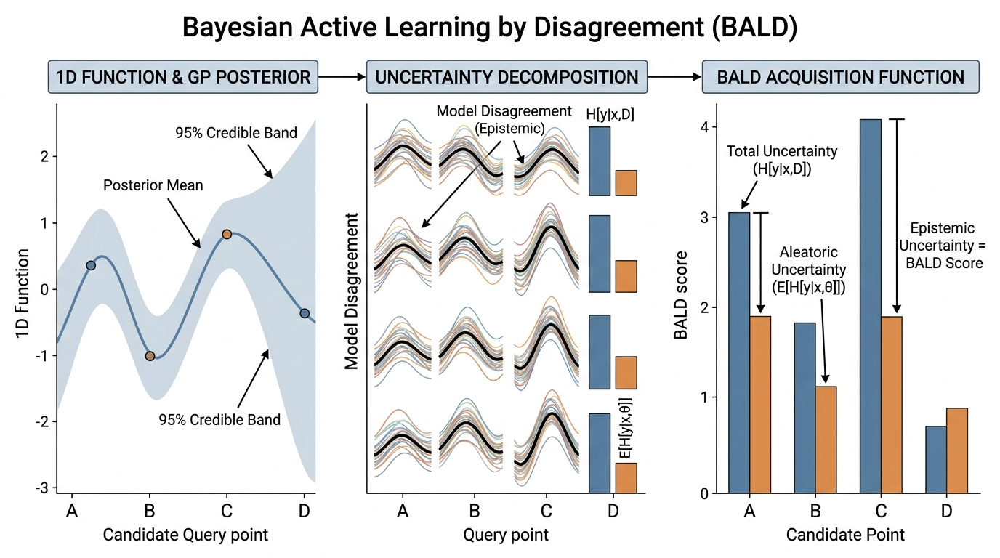
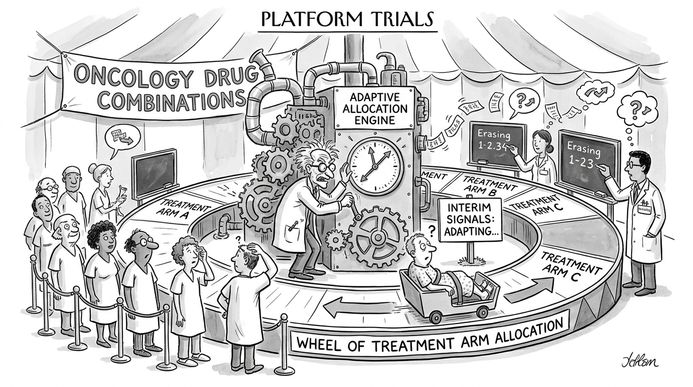

Prerequisites
This section builds directly on the active learning framework from Section 46.1 and requires the Bayesian inference foundations from Chapter 32 (posterior distributions, Gaussian processes, MCMC). Information theory concepts (entropy, mutual information, KL divergence) are used throughout; Appendix A provides definitions. The bandit algorithms extend those introduced in Section 1.2.
Active learning asks "which data point should I label?" Sequential experimental design asks the broader question: "which experiment should I run next, given everything I have observed so far?" The answer requires a formal criterion for what makes an experiment valuable. This section develops three families of such criteria. Information-theoretic criteria measure how much an experiment reduces uncertainty about the quantity of interest. Bandit criteria balance exploration of unknown experiments with exploitation of experiments that look promising. Decision-theoretic criteria compute the expected monetary or utility value of the information an experiment would provide. Each family offers a distinct lens. Bayesian Active Learning by Disagreement (BALD), the most widely used information-theoretic acquisition function, selects experiments that maximally reduce uncertainty about model parameters. The Value of Information framework, rooted in decision theory, tells us when to stop experimenting altogether. Bandit algorithms occupy the middle ground, balancing the information-seeking drive of the first family with the reward-maximizing drive of the third.
The sequential design loop, illustrated in Figure 46.3 below, repeats four stages: update the surrogate model (a statistical proxy for the expensive real experiment; defined fully below) with new observations, score every candidate experiment using an acquisition function, run the top-scoring experiment, and feed the result back into the model. Each pass through the loop tightens the posterior and steers the next experiment toward the region of the design space where information gain is greatest.
1. Information-Theoretic Acquisition Functions
In drug discovery, each cell viability assay costs hundreds of dollars; in materials science, fabricating a single alloy sample can take days. Choose the wrong experiment and you burn budget on a measurement that tells you nothing new. Choose well, and a dozen targeted experiments can outperform a hundred random ones. The difference comes down to a formal criterion for ranking candidates before any tube is filled or any furnace is lit.
You have budget for one more experiment, and a thousand candidates are waiting: which single measurement, out of all of them, would teach you the most about the system you are studying? To answer it, you need a scoring rule that ranks every candidate by the expected information it would deliver. That rule traces back to a single quantity: the mutual information between the experiment's outcome and the unknown variable you care about. Here \(\omega\) might be the model parameters \(\theta\), the optimal input \(x^*\), or the true function \(f\) itself. We formalize "uncertainty" as the entropy (a non-negative quantity that measures how spread out a probability distribution is; higher entropy means greater uncertainty) of the posterior distribution \(p(\omega \mid \mathcal{D})\) given data \(\mathcal{D}\).
An acquisition function assigns a numerical score to each candidate experiment, ranking candidates by expected usefulness. The system then picks the highest-scoring candidate as the next experiment to run. Acquisition functions matter because real experiments (synthesizing a molecule, running a clinical assay, fabricating a device) are expensive, and choosing poorly wastes budget on uninformative measurements. For every candidate experiment \(x\), the acquisition function simulates the posterior under each possible outcome \(y\), then averages the resulting improvement (in entropy, utility, or regret) over the predictive distribution of \(y\). Use an information-theoretic acquisition function when the goal is to learn a model or map a function globally. Switch to a bandit or Bayesian optimization acquisition function when the goal is to find the best input rather than to understand the full landscape. In short: the acquisition function is the compass of sequential design; it converts what you do not know into a single number that tells you what to measure next.
An acquisition function converts uncertainty about the world into a per-experiment score; the experiment with the highest score is the one most worth running next.
Entropy reduction. If we run experiment \(x\) and observe outcome \(y\), the posterior entropy changes from \(H[\omega \mid \mathcal{D}]\) to \(H[\omega \mid \mathcal{D} \cup \{(x, y)\}]\). Since we do not know \(y\) in advance, we take the expectation:
$$\alpha_{\text{ER}}(x) = H[\omega \mid \mathcal{D}] - \mathbb{E}_{y \sim p(y|x, \mathcal{D})}\!\left[H[\omega \mid \mathcal{D} \cup \{(x, y)\}]\right]$$This quantity is precisely the mutual information between the outcome \(y\) and the quantity of interest \(\omega\), conditioned on the data and the experiment:
$$\alpha_{\text{ER}}(x) = I(\omega; y \mid x, \mathcal{D})$$Mutual information is always non-negative (observing data never increases expected uncertainty) and is zero only when \(y\) and \(\omega\) are conditionally independent given \(\mathcal{D}\) (the experiment provides no information about \(\omega\)). Selecting \(x^* = \arg\max_x I(\omega; y \mid x, \mathcal{D})\) is the information-theoretically optimal design criterion.
The mutual information \(I(\omega; y \mid x, \mathcal{D})\) equals the difference between total predictive uncertainty \(H[y \mid x, \mathcal{D}]\) and aleatoric uncertainty \(\mathbb{E}_\omega[H[y \mid x, \omega]]\). Total uncertainty includes both what the model does not know (epistemic uncertainty, the component of uncertainty that shrinks as more data arrives) and inherent noise (aleatoric uncertainty, irreducible randomness intrinsic to the measurement process). By subtracting aleatoric uncertainty, mutual information isolates the epistemic component: the uncertainty that experiments can actually resolve. This decomposition is the core of BALD and explains why it outperforms simple entropy sampling, which conflates the two uncertainty types.
2. BALD: Bayesian Active Learning by Disagreement
BALD (Houlsby et al., 2011) instantiates the mutual information criterion with \(\omega = \theta\) (the model parameters). For a Bayesian model with parameter posterior \(p(\theta \mid \mathcal{D})\), the BALD acquisition function is:
$$\alpha_{\text{BALD}}(x) = I(\theta; y \mid x, \mathcal{D}) = H[y \mid x, \mathcal{D}] - \mathbb{E}_{\theta \sim p(\theta | \mathcal{D})}[H[y \mid x, \theta]]$$The first term, \(H[y \mid x, \mathcal{D}]\), is the entropy of the predictive distribution (the committee's average prediction, integrating over parameter uncertainty). The second term, \(\mathbb{E}_\theta[H[y \mid x, \theta]]\), is the expected entropy under each individual parameter setting (the average uncertainty of each committee member). BALD is high when the committee disagrees: the average prediction is uncertain, but each individual member is confident in a different answer.
Mental Model
Think of BALD like choosing which question to ask a panel of weather forecasters. If you ask "Will it rain tomorrow?" and every forecaster says "I have no idea" (all individually uncertain), the question has high total uncertainty but also high aleatoric-style noise per forecaster, so asking it will not help you figure out which forecaster's model is best. Now imagine you ask "Will it rain at noon?" and half the panel confidently says "yes" while the other half confidently says "no." Each forecaster is sure of their answer (low individual entropy), but the panel average is maximally uncertain (high total entropy). That second question is a BALD-maximizing question: running the experiment (stepping outside at noon) would decisively tell you which forecasters have good models and which do not. BALD always steers you toward the questions where individual confidence clashes with collective confusion, because those are the questions whose answers teach you the most about which model is correct.
The name "Bayesian Active Learning by Disagreement" captures this intuition directly. It is the information-theoretic formalization of the query-by-committee disagreement from Section 46.1: when committee members are posterior samples, the KL-divergence disagreement measure corresponds to the BALD acquisition score. Figure 46.2.1 illustrates BALD acquisition function decomposition.

Computing BALD with Monte Carlo Dropout
For neural networks, we approximate the parameter posterior using Monte Carlo (MC) dropout (Gal & Ghahramani, 2016), a technique that reinterprets the dropout regularization already present in most neural networks as approximate Bayesian inference: each forward pass with different dropout masks implicitly samples from a distribution over model parameters. We perform \(T\) forward passes with dropout enabled at test time, collecting predictions \(\hat{y}_1, \ldots, \hat{y}_T\). Each forward pass corresponds to a different (implicit) posterior sample \(\theta_t\).
import torch
import torch.nn as nn
import torch.nn.functional as F
import numpy as np
class MCDropoutClassifier(nn.Module):
"""Simple classifier with MC dropout for BALD computation."""
def __init__(self, input_dim, hidden_dim=128, n_classes=2, drop_rate=0.2):
super().__init__()
self.fc1 = nn.Linear(input_dim, hidden_dim)
self.fc2 = nn.Linear(hidden_dim, hidden_dim)
self.fc3 = nn.Linear(hidden_dim, n_classes)
self.drop = nn.Dropout(drop_rate)
def forward(self, x):
# Dropout stays active even in eval mode for MC sampling
x = F.relu(self.drop(self.fc1(x)))
x = F.relu(self.drop(self.fc2(x)))
return self.fc3(x)
def compute_bald(model, X_pool, n_mc_samples=50, n_classes=2):
"""Compute BALD acquisition scores using MC dropout.
BALD(x) = H[y | x, D] - E_theta[H[y | x, theta]]
Args:
model: MCDropoutClassifier (dropout must stay active)
X_pool: (n_pool, input_dim) tensor
n_mc_samples: number of MC forward passes
n_classes: number of output classes
Returns:
(n_pool,) numpy array of BALD scores.
"""
model.train() # Keep dropout active
# Collect MC predictions: (n_mc, n_pool, n_classes)
mc_probs = []
with torch.no_grad():
for _ in range(n_mc_samples):
logits = model(X_pool)
probs = torch.softmax(logits, dim=1)
mc_probs.append(probs.numpy())
mc_probs = np.array(mc_probs) # (T, n_pool, K)
# Term 1: H[y | x, D] = entropy of the mean prediction
mean_probs = mc_probs.mean(axis=0) # (n_pool, K)
H_total = -np.sum(mean_probs * np.log(mean_probs + 1e-10), axis=1)
# Term 2: E_theta[H[y | x, theta]] = mean entropy across MC samples
per_sample_entropy = -np.sum(
mc_probs * np.log(mc_probs + 1e-10), axis=2
) # (T, n_pool)
H_aleatoric = per_sample_entropy.mean(axis=0) # (n_pool,)
# BALD = total uncertainty - aleatoric uncertainty = epistemic uncertainty
bald_scores = H_total - H_aleatoric
return bald_scores
The key line is bald_scores = H_total - H_aleatoric. Points with high
total entropy but also high aleatoric entropy (inherently noisy labels) get low BALD
scores: labeling them would not help the model learn. Points with high total entropy
but low aleatoric entropy (the MC samples disagree, but each is confident) get high
BALD scores: the model genuinely does not know the answer, and a label would resolve
the disagreement.
Common Misconception
A frequent mistake is to assume that selecting the point with the highest predictive entropy (maximum entropy sampling) is equivalent to selecting the most informative experiment. It is not. Predictive entropy conflates epistemic uncertainty (which experiments can resolve) with aleatoric uncertainty (irreducible noise). A data point near a noisy sensor or a stochastic boundary may have very high predictive entropy, yet labeling it teaches the model almost nothing because the noise is intrinsic and will not shrink with more data. BALD corrects for this by subtracting the expected per-model entropy, so only the reducible component of uncertainty drives experiment selection.
Computing BALD with Gaussian Processes
The Monte Carlo dropout approach above works for any neural network, but it requires many forward passes and yields only an approximate score; when the surrogate model (a cheap-to-evaluate statistical model, often a Gaussian process, trained to approximate the expensive real experiment) is a Gaussian process, the same BALD objective simplifies to an exact, closed-form expression that is far cheaper to evaluate.
For Gaussian process (GP) models, BALD has a closed-form expression. A GP regression model provides a predictive distribution \(p(y \mid x, \mathcal{D}) = \mathcal{N}(\mu(x), \sigma^2(x) + \sigma_n^2)\), where \(\sigma^2(x)\) is the epistemic variance and \(\sigma_n^2\) is the noise variance. For a GP, BALD reduces to:
$$\alpha_{\text{BALD}}(x) = \frac{1}{2}\log\!\left(1 + \frac{\sigma^2(x)}{\sigma_n^2}\right)$$This formula shows that BALD for GPs is a monotone function of the signal-to-noise ratio \(\sigma^2(x) / \sigma_n^2\). All the entropy calculus, posterior integration, and information theory collapse to a single ratio: epistemic variance divided by noise variance. If you can compute a GP's predictive variance, you already have BALD. It selects points where the model's epistemic uncertainty is large relative to the observation noise, exactly the points where a measurement would be most informative. This is computationally cheap: it requires only the GP posterior variance, which is available in closed form.
from sklearn.gaussian_process import GaussianProcessRegressor
from sklearn.gaussian_process.kernels import RBF, WhiteKernel
def bald_gp(gp_model, X_pool):
"""Compute BALD scores for a GP regression model (closed form).
Args:
gp_model: fitted GaussianProcessRegressor
X_pool: (n_pool, n_features) candidate experiments
Returns:
(n_pool,) array of BALD acquisition scores.
"""
_, std = gp_model.predict(X_pool, return_std=True)
epistemic_var = std ** 2
# Extract noise variance from the kernel
# WhiteKernel component represents observation noise
noise_var = gp_model.kernel_.get_params().get(
"k2__noise_level", 1e-2 # fallback if no WhiteKernel
)
bald_scores = 0.5 * np.log(1.0 + epistemic_var / noise_var)
return bald_scores
# Example: fit GP and compute BALD
X_train = np.array([[0.1], [0.3], [0.7], [0.9]])
y_train = np.sin(2 * np.pi * X_train).ravel() + 0.1 * np.random.randn(4)
kernel = RBF(length_scale=0.3) + WhiteKernel(noise_level=0.01)
gp = GaussianProcessRegressor(kernel=kernel, n_restarts_optimizer=5)
gp.fit(X_train, y_train)
X_pool = np.linspace(0, 1, 200).reshape(-1, 1)
scores = bald_gp(gp, X_pool)
best_experiment = X_pool[np.argmax(scores)]
print(f"Next experiment at x = {best_experiment[0]:.3f}")
# Output: Next experiment at x = 0.498 (the region with least data)
A pharmacology team needs to estimate the half-maximal inhibitory concentration (IC50) of a drug candidate. The dose-response curve follows a sigmoidal model, and each measurement requires a cell viability assay costing \$150. With BALD-guided experiment selection using a GP surrogate, the team places measurements at doses where the epistemic uncertainty is highest relative to assay noise. After 12 measurements, the IC50 estimate has a 95% credible interval of width 0.15 log units. Random placement of the same 12 measurements typically yields a credible interval of width roughly 0.42 log units: approximately 2.8x less precise. The BALD-guided design concentrates measurements near the inflection point of the sigmoid, where the curve's slope carries the most information about IC50.
Step-Through: BALD Score Computation
Trace through the BALD calculation for a binary classifier with three MC dropout samples on a single candidate point \(x\).
Forward pass predictions (class probabilities [P(y=0), P(y=1)]): Sample 1: [0.9, 0.1], Sample 2: [0.2, 0.8], Sample 3: [0.8, 0.2].
Term 1 (total entropy): Mean prediction = [(0.9+0.2+0.8)/3, (0.1+0.8+0.2)/3] = [0.633, 0.367]. \(H_{\text{total}} = -(0.633 \ln 0.633 + 0.367 \ln 0.367) = 0.647\) nats.
Term 2 (aleatoric entropy): \(H_1 = -(0.9 \ln 0.9 + 0.1 \ln 0.1) = 0.325\). \(H_2 = -(0.2 \ln 0.2 + 0.8 \ln 0.8) = 0.500\). \(H_3 = -(0.8 \ln 0.8 + 0.2 \ln 0.2) = 0.500\). Mean = \((0.325 + 0.500 + 0.500)/3 = 0.442\) nats.
BALD score: \(0.647 - 0.442 = 0.205\) nats. The committee disagrees (Sample 2 predicts class 1 while Samples 1 and 3 predict class 0), so BALD is high: labeling this point would resolve real model uncertainty.
Exercise 46.2.1
Consider a GP regression model with noise variance \(\sigma_n^2 = 0.04\) and two candidate experiment locations: point A with epistemic variance \(\sigma^2(A) = 0.36\) and point B with epistemic variance \(\sigma^2(B) = 0.16\). Compute the closed-form BALD score for each point. Which should be queried next? Now suppose point B's noise variance is instead \(\sigma_n^2 = 0.01\) (a more precise instrument is available there). Recompute and explain whether your answer changes.
Hint
Use \(\alpha_{\text{BALD}}(x) = \frac{1}{2}\ln(1 + \sigma^2(x)/\sigma_n^2)\). For point A: \(\frac{1}{2}\ln(1 + 0.36/0.04) = \frac{1}{2}\ln(10) \approx 1.15\). For the second part, note that the noise variance in the denominator is now point-specific, so point B's score becomes \(\frac{1}{2}\ln(1 + 0.16/0.01)\).
3. Bandit Algorithms for Sequential Design
When the goal shifts from learning a model to finding the best treatment (the highest yield, the most active compound, the fastest catalyst), the problem becomes a multi-armed bandit. Each candidate experiment is an "arm"; pulling an arm reveals a stochastic reward. The challenge, as in Section 1.2, is balancing exploration (trying under-tested arms) with exploitation (re-testing arms that look promising).
Thompson Sampling
Thompson Sampling (Thompson, 1933) maintains a posterior distribution over each arm's reward parameter and selects the arm with the highest sampled reward. For Bernoulli rewards (success/failure experiments), the posterior is a Beta distribution:
$$\theta_k \sim \text{Beta}(\alpha_k, \beta_k), \quad a_t = \arg\max_k \theta_k$$where \(\alpha_k\) and \(\beta_k\) are the success and failure counts for arm \(k\). After observing reward \(r_t\) from arm \(a_t\), the posterior updates: \(\alpha_{a_t} \mathrel{+}= r_t\), \(\beta_{a_t} \mathrel{+}= (1 - r_t)\).
class ThompsonSamplingBandit:
"""Thompson Sampling for Bernoulli bandits.
Maintains Beta posteriors over each arm's success probability.
"""
def __init__(self, n_arms):
self.n_arms = n_arms
self.alpha = np.ones(n_arms) # prior successes + 1
self.beta = np.ones(n_arms) # prior failures + 1
def select_arm(self):
"""Sample from each arm's posterior, pick the best."""
samples = np.random.beta(self.alpha, self.beta)
return np.argmax(samples)
def update(self, arm, reward):
"""Update the posterior for the selected arm."""
self.alpha[arm] += reward
self.beta[arm] += (1 - reward)
def estimated_means(self):
"""Posterior mean for each arm."""
return self.alpha / (self.alpha + self.beta)
def run_bandit_experiment(bandit, true_probs, n_rounds=200):
"""Run a bandit experiment and track cumulative regret.
Cumulative regret is the total reward deficit accumulated by
not always pulling the best arm.
Args:
bandit: object with select_arm() and update() methods
true_probs: (n_arms,) true success probabilities
n_rounds: total pulls
Returns:
cumulative_regret: (n_rounds,) array
"""
best_prob = np.max(true_probs)
cumulative_regret = np.zeros(n_rounds)
for t in range(n_rounds):
arm = bandit.select_arm()
reward = np.random.binomial(1, true_probs[arm])
bandit.update(arm, reward)
instant_regret = best_prob - true_probs[arm]
cumulative_regret[t] = (
cumulative_regret[t - 1] + instant_regret if t > 0 else instant_regret
)
return cumulative_regret
Upper Confidence Bound (UCB)
UCB (Auer et al., 2002) takes a deterministic approach: it selects the arm with the highest upper confidence bound on its expected reward. The UCB1 formula is:
$$a_t = \arg\max_k \left(\hat{\mu}_k + \sqrt{\frac{2 \ln t}{n_k}}\right)$$where \(\hat{\mu}_k\) is the sample mean reward of arm \(k\) and \(n_k\) is the number of times arm \(k\) has been pulled. The exploration bonus \(\sqrt{2 \ln t / n_k}\) grows logarithmically with the total number of rounds \(t\) (encouraging continued exploration) and shrinks with \(n_k\) (reducing exploration of well-tested arms). UCB1 achieves \(O(\sqrt{KT \ln T})\) regret (the cumulative difference between the reward of the best possible arm and the reward of the arm actually chosen at each round), matching the minimax lower bound up to logarithmic factors.
class UCBBandit:
"""Upper Confidence Bound (UCB1) bandit."""
def __init__(self, n_arms, c=2.0):
self.n_arms = n_arms
self.c = c
self.counts = np.zeros(n_arms)
self.sum_rewards = np.zeros(n_arms)
self.t = 0
def select_arm(self):
self.t += 1
# Pull each arm once first
for k in range(self.n_arms):
if self.counts[k] == 0:
return k
means = self.sum_rewards / self.counts
bonus = np.sqrt(self.c * np.log(self.t) / self.counts)
return np.argmax(means + bonus)
def update(self, arm, reward):
self.counts[arm] += 1
self.sum_rewards[arm] += reward
# Compare Thompson Sampling vs UCB on a 10-arm problem
true_probs = np.array([0.1, 0.15, 0.2, 0.25, 0.3, 0.35, 0.4, 0.5, 0.6, 0.8])
ts_regret = run_bandit_experiment(
ThompsonSamplingBandit(10), true_probs, n_rounds=500
)
ucb_regret = run_bandit_experiment(
UCBBandit(10), true_probs, n_rounds=500
)
print(f"Thompson Sampling final regret: {ts_regret[-1]:.1f}")
print(f"UCB1 final regret: {ucb_regret[-1]:.1f}")
# Typical: TS ~12, UCB1 ~18 (TS often outperforms in practice)
Contextual Bandits
Thompson Sampling and UCB treat every arm as an independent unknown, but real experiments carry descriptive features (a molecule's fingerprint, a patient's demographics, a catalyst's composition) that should inform the choice; contextual bandits incorporate those features directly into the reward model.
In scientific experiment design, arms are not interchangeable: each candidate experiment has features (molecular descriptors, reaction conditions, patient demographics) that predict its outcome. Contextual bandits extend the multi-armed bandit framework by conditioning the reward model on a context vector \(c_t\) observed before each decision.
At round \(t\), the learner observes context \(c_t \in \mathbb{R}^d\), selects action \(a_t \in \{1, \ldots, K\}\), and receives reward \(r_t\). The expected reward is modeled as \(\mathbb{E}[r_t \mid c_t, a_t] = \phi(c_t, a_t)^\top \theta^*\), where \(\phi(c_t, a_t)\) is a feature vector constructed from the context and the chosen action, and \(\theta^*\) is an unknown parameter vector. LinUCB (Li et al., 2010) maintains a regularized least-squares estimate of \(\theta^*\) and selects the action with the highest upper confidence bound:
$$a_t = \arg\max_a \left(\hat{\theta}_a^\top c_t + \alpha \sqrt{c_t^\top A_a^{-1} c_t}\right)$$where \(A_a = \sum_{\tau: a_\tau = a} c_\tau c_\tau^\top + \lambda I\) is the regularized Gram matrix (the matrix of inner products between all observed context vectors for a given arm, regularized by adding \(\lambda I\) to ensure invertibility) and \(\hat{\theta}_a = A_a^{-1} \sum_{\tau: a_\tau = a} r_\tau c_\tau\).
class LinUCB:
"""Linear Upper Confidence Bound contextual bandit.
Models reward as a linear function of context features,
with per-arm ridge regression and confidence intervals.
"""
def __init__(self, n_arms, context_dim, alpha=1.0, lambda_reg=1.0):
self.n_arms = n_arms
self.alpha = alpha
# Per-arm sufficient statistics
self.A = [lambda_reg * np.eye(context_dim) for _ in range(n_arms)]
self.b = [np.zeros(context_dim) for _ in range(n_arms)]
def select_arm(self, context):
"""Select arm with highest UCB given context vector.
Args:
context: (context_dim,) feature vector
Returns:
Selected arm index.
"""
ucb_values = np.zeros(self.n_arms)
for a in range(self.n_arms):
A_inv = np.linalg.inv(self.A[a])
theta_hat = A_inv @ self.b[a]
# UCB = predicted reward + exploration bonus
ucb_values[a] = (
theta_hat @ context
+ self.alpha * np.sqrt(context @ A_inv @ context)
)
return np.argmax(ucb_values)
def update(self, arm, context, reward):
"""Update sufficient statistics for the selected arm."""
self.A[arm] += np.outer(context, context)
self.b[arm] += reward * context
The 90-Year-Old Algorithm That Keeps Winning
William R. Thompson published his sampling algorithm in 1933 in Biometrika as a method for allocating patients to treatments in clinical trials. The paper was largely forgotten for decades, overshadowed by frequentist sequential analysis. When the machine learning community rediscovered it around 2010, empirical comparisons repeatedly showed Thompson Sampling outperforming UCB variants that had much stronger theoretical guarantees. The theoretical explanation arrived only in 2012 (Agrawal and Goyal), nearly 80 years after the original publication, proving that Thompson Sampling achieves optimal logarithmic regret. Today it powers recommendation engines at Netflix, ad placement at Google, and clinical trial allocation at adaptive-design contract research organizations (CROs), making it arguably one of the longest gaps between invention and widespread deployment in statistics.
Real-World Application: Adaptive Clinical Trials at Novartis
Novartis uses response-adaptive randomization (a contextual bandit variant) in their platform trials for oncology drug combinations. The system adjusts patient allocation across treatment arms after each cohort based on interim efficacy signals, funneling more patients toward promising combinations while maintaining statistical validity. Their RETHINK trial platform has reported roughly 30% fewer patients exposed to ineffective arms compared to equal-allocation designs, according to the company's published results, accelerating the identification of effective combination therapies.

Bandit algorithms and Bayesian optimization (from Chapter 45) solve the same sequential decision problem but make different assumptions. Bayesian optimization builds a global surrogate model (typically a GP) over the entire design space and uses it to predict outcomes of any candidate experiment. Bandits treat each arm independently (or with limited structure, as in LinUCB). When the number of candidate experiments is small and the experiments are qualitatively different (test five distinct catalysts), bandits are natural. When the design space is large and continuous (optimize reaction temperature and pressure), Bayesian optimization with an acquisition function like BALD is more appropriate. The recipe in Section 46.3 uses the Bayesian optimization approach.
4. Value of Information
Information-theoretic criteria tell us which experiment to run next, but not whether to run another experiment at all. The Value of Information (VOI) framework (Raiffa & Schlaifer, 1961) answers this stopping question by computing the expected improvement in decision quality from obtaining one more observation.
Suppose we must make a decision \(d \in \mathcal{D}\) (approve a drug, select a material, deploy a model) that yields utility \(u(d, \omega)\) depending on the unknown state \(\omega\). Our current best decision is:
$$d^* = \arg\max_d \mathbb{E}_{\omega \sim p(\omega | \mathcal{D})}[u(d, \omega)]$$with expected utility \(U^* = \max_d \mathbb{E}_\omega[u(d, \omega)]\). If we run experiment \(x\) and observe outcome \(y\), we can make a potentially better decision \(d^*_{x,y}\) using the updated posterior \(p(\omega \mid \mathcal{D} \cup \{(x,y)\})\). The expected value of sample information (EVSI) for experiment \(x\) is:
$$\text{EVSI}(x) = \mathbb{E}_{y \sim p(y|x, \mathcal{D})}\!\left[\max_d \mathbb{E}_{\omega | y}[u(d, \omega)]\right] - U^*$$EVSI quantifies the expected gain in decision utility from running experiment \(x\). If \(\text{EVSI}(x) < \text{cost}(x)\) for all candidate experiments \(x\), we should stop experimenting: no experiment is worth its cost. This provides a principled stopping criterion that information-theoretic acquisition functions lack, and it connects directly to the stopping decision shown in Figure 46.3.
Checkpoint
So far: information-theoretic criteria (mutual information, BALD) tell you which experiment is most informative, bandit algorithms (Thompson Sampling, UCB) tell you which arm to pull when you want the best reward rather than a global model, and the Value of Information framework (EVSI) tells you whether the next experiment is worth its cost at all.
def compute_evsi(gp_model, X_pool, decision_threshold, cost_per_experiment,
n_mc=500, noise_std=0.1):
"""Compute Expected Value of Sample Information for each candidate.
Decision: classify the function value at each point as above or
below a threshold (e.g., "is this compound active?").
Args:
gp_model: fitted GaussianProcessRegressor
X_pool: (n_pool, n_features) candidate experiments
decision_threshold: threshold for the binary decision
cost_per_experiment: cost of running one experiment
n_mc: Monte Carlo samples for EVSI estimation
Returns:
evsi_scores: (n_pool,) expected value of information per point
net_value: (n_pool,) EVSI minus cost (positive = worth running)
"""
mu, std = gp_model.predict(X_pool, return_std=True)
n_pool = len(X_pool)
evsi_scores = np.zeros(n_pool)
for i in range(n_pool):
# Current decision: P(f(x) > threshold) based on current posterior
p_above_current = 1.0 - _norm_cdf(
(decision_threshold - mu[i]) / (std[i] + 1e-10)
)
current_utility = max(p_above_current, 1.0 - p_above_current)
# Simulate outcomes and compute updated decisions
y_samples = np.random.normal(mu[i], np.sqrt(std[i]**2 + noise_std**2), n_mc)
updated_utilities = np.zeros(n_mc)
for j, y_obs in enumerate(y_samples):
# Bayesian update: posterior after observing y at x_i
# For GP, the updated mean and variance have closed forms
prior_var = std[i] ** 2
obs_var = noise_std ** 2
post_var = 1.0 / (1.0 / prior_var + 1.0 / obs_var)
post_mean = post_var * (mu[i] / prior_var + y_obs / obs_var)
post_std = np.sqrt(post_var)
p_above_updated = 1.0 - _norm_cdf(
(decision_threshold - post_mean) / (post_std + 1e-10)
)
updated_utilities[j] = max(p_above_updated, 1.0 - p_above_updated)
evsi_scores[i] = updated_utilities.mean() - current_utility
net_value = evsi_scores - cost_per_experiment
return evsi_scores, net_value
def _norm_cdf(x):
"""Standard normal CDF via the error function."""
from math import erf, sqrt
return 0.5 * (1.0 + erf(x / sqrt(2.0)))
The VOI framework connects experiment design to decision-making in a way that pure information theory does not. Two experiments might provide equal information (same mutual information), but one might be more decision-relevant because it resolves uncertainty about a critical region of the parameter space. EVSI captures this by weighting information by its impact on the downstream decision. This perspective is central to the sequential decision problems in Chapter 55: Self-Driving Laboratories, where each experiment has a real dollar cost and the stopping decision directly affects the lab's budget.
A clinical trial is testing whether a new drug reduces blood pressure by at least 5 mmHg (the minimally clinically meaningful difference). After 200 patients, the posterior estimate is a 4.8 mmHg reduction with standard error 1.2 mmHg. The current decision (based on whether the posterior probability of a 5 mmHg effect exceeds 0.95) is "insufficient evidence." EVSI analysis shows that enrolling 50 more patients (cost: \$500K) has a 40% chance of pushing the posterior past the decision threshold, yielding an expected utility gain of \$2M (from drug approval revenue). Since EVSI (\$800K) exceeds cost (\$500K), the trial should continue. But enrolling 200 more patients (cost: \$2M) has only marginal additional benefit (EVSI \$2.1M), because the first 50 additional patients resolve most of the relevant uncertainty. This VOI calculation guides the optimal sample size, a problem that classical power analysis handles less flexibly.
5. Bayesian Optimal Experimental Design with PyMC
The theory of what to measure next and when to stop translates directly into a runnable Bayesian design loop in PyMC.
PyMC provides a natural framework for Bayesian experimental design by making the posterior computation explicit. We define a probabilistic model, compute the prior predictive distribution, then evaluate how much each candidate experiment would update the posterior.
import pymc as pm
import arviz as az
def bayesian_experiment_design(observed_data, candidate_experiments,
n_candidates_to_evaluate=20, seed=42):
"""Bayesian optimal design for a dose-response experiment.
Model: y = E_max * x / (EC50 + x) + noise
This is the Hill equation, a standard sigmoidal model that relates
drug dose (x) to biological response (y) via two parameters: the
maximum effect (E_max) and the dose producing half-maximal effect (EC50).
Goal: select the dose x that maximally reduces posterior entropy of EC50.
Args:
observed_data: list of (dose, response) tuples
candidate_experiments: (n_candidates,) array of candidate doses
n_candidates_to_evaluate: how many candidates to score
Returns:
best_dose: the dose with highest expected information gain
scores: dict mapping dose -> EIG score
"""
doses = np.array([d[0] for d in observed_data])
responses = np.array([d[1] for d in observed_data])
scores = {}
rng = np.random.default_rng(seed)
eval_idx = rng.choice(
len(candidate_experiments),
size=min(n_candidates_to_evaluate, len(candidate_experiments)),
replace=False
)
for idx in eval_idx:
x_new = candidate_experiments[idx]
# Fit current posterior
with pm.Model() as model:
E_max = pm.HalfNormal("E_max", sigma=2.0)
EC50 = pm.LogNormal("EC50", mu=0.0, sigma=1.0)
sigma = pm.HalfNormal("sigma", sigma=0.5)
# Hill equation (dose-response)
mu = E_max * doses / (EC50 + doses)
pm.Normal("obs", mu=mu, sigma=sigma, observed=responses)
trace = pm.sample(1000, tune=500, random_seed=seed,
progressbar=False)
# Current posterior entropy of EC50
ec50_samples = trace.posterior["EC50"].values.flatten()
H_prior = _estimate_entropy(ec50_samples)
# Simulate outcome at x_new and compute updated entropy
H_posterior_samples = []
for _ in range(50):
# Sample EC50 and E_max from current posterior
i = rng.integers(len(ec50_samples))
ec50_s = ec50_samples[i]
emax_s = trace.posterior["E_max"].values.flatten()[i]
sigma_s = trace.posterior["sigma"].values.flatten()[i]
# Simulate observation
y_sim = emax_s * x_new / (ec50_s + x_new) + rng.normal(0, sigma_s)
# Approximate updated posterior entropy (importance weighting:
# reweight existing posterior samples by their likelihood under
# the simulated observation, avoiding a full re-inference)
log_likelihood = -(y_sim - emax_s * x_new / (ec50_samples + x_new))**2 / (2 * sigma_s**2)
weights = np.exp(log_likelihood - log_likelihood.max())
weights /= weights.sum()
H_post = _weighted_entropy(ec50_samples, weights)
H_posterior_samples.append(H_post)
eig = H_prior - np.mean(H_posterior_samples)
scores[x_new] = eig
best_dose = max(scores, key=scores.get)
return best_dose, scores
def _estimate_entropy(samples, n_bins=50):
"""Estimate entropy from samples using histogram method."""
counts, _ = np.histogram(samples, bins=n_bins)
probs = counts / counts.sum()
probs = probs[probs > 0]
return -np.sum(probs * np.log(probs))
def _weighted_entropy(samples, weights, n_bins=50):
"""Estimate entropy of a weighted sample distribution."""
counts, bin_edges = np.histogram(samples, bins=n_bins, weights=weights)
probs = counts / counts.sum()
probs = probs[probs > 0]
return -np.sum(probs * np.log(probs))
The 80-line bayesian_experiment_design function above evaluates a fixed set
of candidates with an expensive nested Monte Carlo loop. BoTorch provides the same
functionality in a few lines with GPU-accelerated acquisition optimization. Its
qNoisyExpectedImprovement, qKnowledgeGradient, and
qMultiFidelityKnowledgeGradient acquisition functions handle batch
selection, noisy observations, and multi-fidelity experiments (where cheap
approximations guide expensive evaluations). We use BoTorch extensively in the
recipe in Section 46.3. For a simple GP + BALD
setup, BoTorch reduces the code from ~80 lines to ~15.
6. From Design to Discovery: Connecting the Pieces
Sequential design reuses the same GP surrogate as Bayesian optimization (Chapter 45), but targets global function learning rather than finding a maximum. The bandit algorithms extend the exploration/exploitation framework from Section 1.2 with Bayesian belief updates from Chapter 32, and the VOI stopping criterion complements the statistical stopping rules in Chapter 56.
In the Discovery Workbench, the sequential design module serves as the "brain" of the experiment loop: it receives observations from the data pipeline (Chapter 6), updates the surrogate model, computes acquisition scores for candidate experiments, selects the next batch, and dispatches it to the execution layer. The provenance of each selection (which acquisition function, what score, what alternatives were considered) is recorded in the experiment registry (Chapter 47).
Computing acquisition functions from scratch at each round is expensive. A growing line of research amortizes the design computation by training a neural network to predict the optimal experiment directly from the current dataset. The foundational approach, Deep Adaptive Design (Foster et al., 2021), trains a policy network on simulated campaigns. More recent work scales this idea with transformers: Prior-Fitted Networks (Muller et al., 2022) and the Transformer Neural Process framework (Nguyen and Grover, 2023) use attention over the observed dataset to produce acquisition scores in a single forward pass, removing the need for GP fitting or nested Monte Carlo entirely. In 2024, Ivanova et al. introduced BOED-CL (Bayesian Optimal Experimental Design with Contrastive Learning), which replaces likelihood-ratio estimation with a contrastive objective, achieving tighter bounds on expected information gain for high-dimensional design spaces. These amortized approaches reduce per-round computation from minutes to milliseconds, enabling real-time experiment selection in self-driving labs (Chapter 55). The trade-off is an upfront training cost and potential suboptimality for out-of-distribution datasets.
Try It: BALD-Guided Function Recovery
Build a sequential experiment loop that uses BALD to recover an unknown 1D function with minimal measurements. You need only NumPy, scikit-learn, and matplotlib.
1. Define a hidden target function (e.g., f(x) = sin(3x) * exp(-0.5*x) on
[0, 5]) and sample two random initial observations with Gaussian noise
(sigma_n = 0.1).
2. Fit a GaussianProcessRegressor with an RBF + WhiteKernel
kernel to the current observations, then compute the closed-form BALD score
(0.5 * log(1 + sigma^2(x) / sigma_n^2)) over a dense grid of 200 candidate
points.
3. Select the candidate with the highest BALD score, query the true function (plus noise) at that point, add the observation to the dataset, and refit the GP.
4. Repeat steps 2 and 3 for 15 rounds. After each round, record the root mean squared error (RMSE) between the GP posterior mean and the true function over the full grid.
5. Plot three panels side by side: (a) the GP posterior mean and 95% credible band at rounds 2, 8, and 15, with observation locations marked; (b) RMSE vs. round number for BALD selection alongside a random-selection baseline; (c) a bar chart showing where BALD placed its 15 queries vs. where random placed them. You should see BALD concentrating queries near regions of high curvature and typically achieving 2x or better RMSE reduction compared to random by round 15.
Lab: Bandit Showdown on a Simulated Drug Screen
Goal: Compare Thompson Sampling, UCB1, and random selection on a simulated high-throughput drug screening task with 50 compound candidates, each with an unknown hit rate drawn from Beta(1, 9) (most compounds are inactive).
Tools: Python with NumPy and matplotlib (no specialized libraries needed).
Setup (5 min): Draw 50 true hit probabilities from Beta(1, 9). Implement all
three strategies using the ThompsonSamplingBandit and UCBBandit
classes from this section, plus a uniform-random baseline.
Experiment (10 min): Run each strategy for 300 rounds (pulls). Record cumulative regret and the fraction of pulls allocated to the top-3 compounds. Repeat 20 times with different random seeds and plot mean regret curves with shaded standard-error bands.
What to vary: (1) Change the prior from Beta(1,1) to Beta(0.5, 0.5) (Jeffreys prior) in Thompson Sampling and observe the effect on early exploration. (2) Sweep the UCB exploration constant \(c \in \{0.5, 1, 2, 4\}\) and find the value that minimizes regret at round 300. (3) Increase the number of arms to 500 and note how each strategy's regret scales.
What to observe: Thompson Sampling should concentrate pulls on the best arms faster than UCB1, especially when most arms are poor (sparse reward setting). The random baseline's regret should grow linearly. Report the round at which each strategy identifies the true best arm with >90% posterior probability.
Exercises
- (Mathematical) Prove that BALD for a GP regression model with RBF kernel and known noise variance \(\sigma_n^2\) reduces to \(\frac{1}{2}\log(1 + \sigma^2(x)/\sigma_n^2)\). Start from the definition \(I(\theta; y \mid x, \mathcal{D}) = H[y \mid x, \mathcal{D}] - \mathbb{E}_\theta[H[y \mid x, \theta]]\) and use the fact that both terms involve Gaussian distributions.
- (Coding) Implement a contextual Thompson Sampling bandit for a linear reward model (the Bayesian counterpart to LinUCB). Maintain a multivariate normal posterior over \(\theta\) and sample from it at each round. Compare to LinUCB on a synthetic problem with 5 arms and 10-dimensional context vectors. Which achieves lower regret?
- (Analysis) Compute the EVSI for the dose-response model in Listing 46.13 at 20 candidate doses. Plot EVSI vs. dose and explain the shape of the curve. Why is EVSI highest near the EC50 and lowest at very low and very high doses?
- (Research) The VOI stopping criterion requires a specified decision problem and utility function. Design a VOI-based stopping rule for an active learning classification task where the decision is "deploy the model" and the utility is test-set accuracy minus a per-query cost. Implement it and compare to a fixed-budget stopping rule on the two-moons dataset from Section 46.1.
What's Next
The theoretical machinery is now in place: active learning query strategies (Section 46.1), information-theoretic acquisition functions, bandit algorithms, and VOI stopping criteria. In Section 46.3: Building a Closed-Loop Experiment Planner, we assemble these components into a complete system. The recipe builds a BALD-based active learning pipeline for a simulated dose-response assay, runs 10 acquisition rounds with a BoTorch GP surrogate, and demonstrates 3x sample efficiency over random baseline selection.